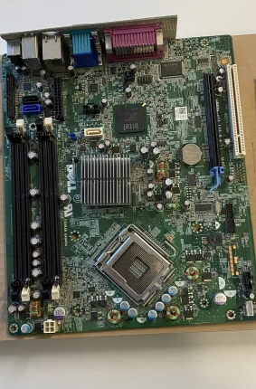
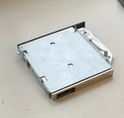
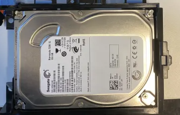

| CPU: | Optical: | |
| PSU: | Optical: | |
| RAM: | Optical: | |
| Moderkort |  | Optical: |
| Optical: |  | An optical drive is hardware that reads and writes data on CDs, DVDs, or Blu-ray discs using lasers. Common in computers, it facilitates data storage, software installation its usage has declined with digital alternatives like downloads and cloud storage in newer devices. |
| Hårddisk: |  | A hard disk is a storage device using magnetic technology to store and retrieve data in computers. It's durable and used for storing files and operating systems |